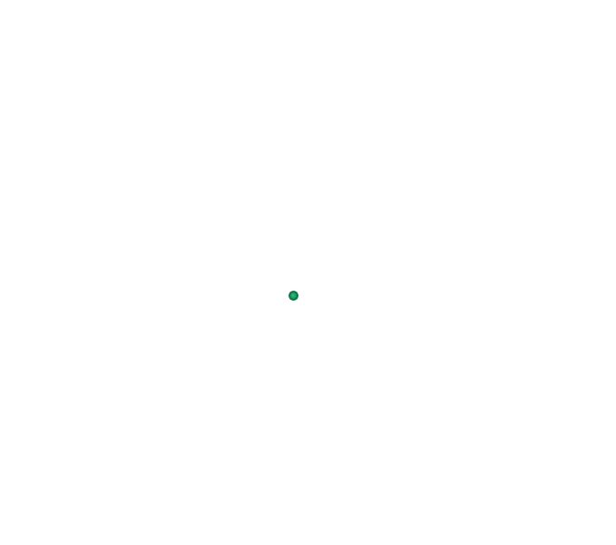
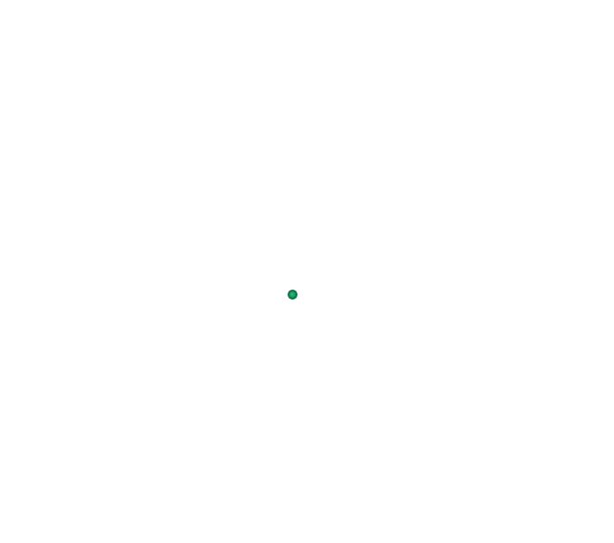

Нимфеон


 



Νυμφαίο
Γενικές πληροφορίες:
- Χώρα: Ελλάδα
- Έκταση: 28.2 τ.χλμ.
- Πληθυσμός: 132 (2011)
- Περιφέρεια: Δυτική Μακεδονία
Σε υψόμετρο 1.350μ. στο όρος Βέρνο (Βίτσι) επισκεφθείτε ένα από τα δέκα ομορφότερα χωριά της Ευρώπης, σύμφωνα με την UNESCO, τον διατηρητέο παραδοσιακό οικισμό του Νυμφαίου. Η ορεινή αυτή όαση, που μοιάζει σαν να βγήκε από παραμύθι, με τα πετρόχτιστα σπίτια και τα λιθόστρωτα μονοπάτια, περικλείεται από ένα απαράμιλλης φυσικής ομορφιάς δάσος οξιάς. Η συναρπαστική φύση που το περιβάλλει, σε συνδυασμό με το λαμπρό παρελθόν, την ιδιαίτερη αρχιτεκτονική με τους παραδοσιακούς ξενώνες, τα φιλόξενα εστιατόρια και καφέ, καθιστούν το Νυμφαίο έναν ιδιαίτερο τόπο, που θα σας γοητεύσει όλες τις εποχές του χρόνου.
Γνωριμία με την ιστορία και τις παραδόσεις
Για τους λάτρεις της παράδοσης και της ιστορίας η περιοχή έχει να διηγηθεί όμορφες ιστορίες και να σας ξεναγήσει μέσα στο χρόνο. Το Νυμφαίο (άλλοτε Νιβιέστα ή Νέβεσκα μέχρι το 1929) έχει μια μακρά και πολυτάραχη ιστορία που ξεκινά στις αρχές του 1300, όταν νομάδες Βλάχοι εγκαταστάθηκαν εδώ. Από τα τέλη του 17ου αι. και για τρεις σχεδόν αιώνες αποτέλεσε ένα από τα μεγαλύτερα κέντρα αργυροχρυσοχοΐας στα Βαλκάνια γεγονός που αντανακλάται στα εντυπωσιακά αρχοντικά του οικισμού.
Και παρότι ο τόπος αυτός λόγω του μεταναστευτικού κινήματος των δεκαετιών του ‘50 και ‘60 έφτασε στα όρια της εγκατάλειψης, σήμερα έχει αναγεννηθεί από ένα μεγάλο μέρος των ντόπιων που έχει επιστρέψει. Κατά τη διαμονή σας, επισκεφθείτε αρχοντικά σπουδαίων ευεργετών του τόπου όπως το Σπίτι των Χρυσικών της Νέβεσκας, ένα πρόσφατα ανακαινισμένο αρχοντικό που λειτουργεί ως Μουσείο Αργυροχρυσοχοΐας, Λαογραφίας και Ιστορίας.
Αποτελεί πιστό αντίγραφο παλαιού αρχοντικού, στο οποίο έχουν ενσωματωθεί παλαιές τοιχογραφίες, περίτεχνα ξύλινα Μακεδονικά ταβάνια και αυθεντικά σπάνια έπιπλα. Αρχιτεκτονικό σήμα κατατεθέν του χωριού αποτελεί το επιβλητικό κτήριο της Νικείου Σχολής, που σήμερα λειτουργεί ως Συνεδριακό κέντρο του Αριστοτελείου Πανεπιστημίου Θεσσαλονίκης.
Δραστηριότητες στη φύσηΑν αναζητάτε έντονες συγκινήσεις στην αγκαλιά της φύσης, τότε βρίσκεστε στο κατάλληλο μέρος. Το Νυμφαίο προσφέρεται για πεζοπορία στα μονοπάτια του δάσος της οξιάς, ποδηλασία βουνού (mountain bike) και ιππασία. Στην ευρύτερη περιοχή μπορείτε να κάνετε ημερήσιες εκδρομές και να γνωρίσετε αυτή τη μοναδικής ομορφιάς και οικολογικής αξίας γωνιά της Μακεδονίας. Ανακαλύψτε τις Λίμνες Ζάζαρη και Χειμαδίτιδα, από τους σημαντικούς υδροβιότοπους της Β. Ελλάδας που ανήκουν στο δίκτυο Natura 2000. Στη Ζάζαρη απολαύστε τη μοναδική θέα της λίμνης, επιδοθείτε στην παρατήρηση πουλιών, κάντε ποδηλατάδα ή περίπατο με άλογα στην περίμετρο της λίμνης, ξενάγηση με τζιπ, τοξοβολία, ποδηλασία βουνού αλλά και κανό στη λίμνη. Σημειώστε ότι η Χειμαδίτιδα αποτελεί έναν από τους σημαντικότερους τόπους αναπαραγωγής της βαλτόπαπιας, ένα είδος που απειλείται υπό εξαφάνιση.
Περιβαλλοντικό Κέντρο του ΑΡΚΤΟΥΡΟΥ1,5 χλμ. έξω από το Νυμφαίο και μέσα στο φυσικό δάσος οξιάς βρίσκεται το Περιβαλλοντικό Κέντρο του Αρκτούρου. Σε μια περιφραγμένη έκταση 50 στρεμμάτων, ζουν σε ημιελεύθερη κατάσταση, πάντα με την φροντίδα των υπευθύνων, πρώην αιχμάλωτες αρκούδες. Ενημερωθείτε για τα υπέροχα αυτά ζώα τα οποία είναι αδύνατο να επανενταχθούν και να επιβιώσουν στο φυσικό τους περιβάλλον καθώς απομακρύνθηκαν από τη μητέρα τους πριν προλάβουν να διδαχθούν τους βασικούς κανόνες επιβίωσης.
Οι 4 ΕποχέςΌλες τις εποχές του χρόνου, το Νυμφαίο είναι υπέροχο χαρίζοντας υπέροχες εικόνες και μοναδικές εμπειρίες.Το χειμώνα η θερμοκρασία πέφτει αρκετά με το χιονισμένο τοπίο να μετατρέπει την περιοχή σε παραμύθι. Η άφιξη της άνοιξης είναι μοναδική καθώς προαναγγέλλεται από το ξύπνημα των αρκούδων στο καταφύγιο του Αρκτούρου. Το καλοκαίρι, η περιοχή προσφέρεται για όσους προτιμούν τα δροσερά καλοκαίρια και τις διακοπές στο βουνό. Χαλαρώστε κάνοντας βαρκάδα στις λίμνες ή ανεβάστε την αδρεναλίνη στο κόκκινο με μια πληθώρα δραστηριοτήτων. Πεσμένα φύλλα σε όλες τις αποχρώσεις του καφέ και του κίτρινου, πρωτοβρόχια, ομίχλη, αναμμένα τζάκια και μια τελευταία συνάντηση με τις αρκούδες του Αρκτούρου πριν το χειμέριο ύπνο, συνιστούν το φθινοπωρινό σκηνικό στο Νυμφαίο.
Τοπικές γαστρονομικές λιχουδιέςΚατά τη διαμονή σας στο Νυμφαίο γευθείτε τοπικά πιάτα που θα σας ξετρελάνουν. Στις ταβέρνες της περιοχής δοκιμάστε τη «Νέβεσκα», ένα πιάτο με στρώσεις από πατάτες, λεπτοκομμένο χοιρινό και λιωμένο τυρί. Στις κοντινές λίμνες θα δοκιμάσετε το αγαπημένο ψάρι των ντόπιων, το γριβάδι, που μαγειρεύεται με πολλούς τρόπους. Το μακεδονίτικο κρασί και το εξαιρετικό τσίπουρο θα συντροφεύσει και θα αναδείξει κατάλληλα κάθε σας γευστική επιλογή!
Нимфеон
Основная информация:- Страна: Греция
- Площадь: 28.2 кв.км.
- Население: 132 (2011)
- Регион: Западная Македония
На высоте 1350 м. на горе Берно (Витси) посетите одну из десяти самых красивых деревень Европы, по данным ЮНЕСКО, сохранившееся традиционное поселение Нимфайо. Этот горный оазис, который выглядит так, словно вышел из сказки, с его каменными домами и мощеными дорожками, окружен непревзойденной природной красотой букового леса. Очаровательная природа, которая его окружает, в сочетании со славным прошлым, особой архитектурой с традиционными гостевыми домами, гостеприимными ресторанами и кафе, делают Нимфайо особым местом, которое будет очаровывать вас круглый год.
Знакомство с историей и традициями
Для любителей традиций и истории этот район должен рассказывать красивые истории и вести вас сквозь время. Нимфеон (ранее Нивиеста или Невеска до 1929 года) имеет долгую и бурную историю, начинающуюся в начале 1300-х годов, когда здесь поселились кочевые влахи. С конца 17 века и в течение почти трех столетий это был один из крупнейших центров серебра и золота на Балканах, что отражено во впечатляющих особняках поселения.
И хотя это место из-за миграционного движения 50-х и 60-х годов дошло до грани заброшенности, сегодня оно было возрождено значительной частью местных жителей, которые вернулись. Во время вашего пребывания посетите особняки великих покровителей этого места, такие как Золотой дом Невескаса, недавно отремонтированный особняк, который служит музеем серебряных дел мастеров, фольклора и истории.
Это точная копия старинного особняка, в котором были использованы старинные фрески, декоративные деревянные македонские потолки и оригинальная редкая мебель. Архитектурной визитной карточкой деревни является внушительное здание школы Никиона, которая сегодня служит конференц-центром Университета Аристотеля в Салониках.
Активный отдых на природеЕсли вы ищете сильные эмоции на лоне природы, то вы находитесь в правильном месте. Нимфайо идеально подходит для пеших прогулок по тропам букового леса, катания на горных велосипедах и верховой езды. В более широком районе вы можете совершить однодневные поездки и познакомиться с этим уникальным по красоте и экологической ценности уголком Македонии. Откройте для себя озера Зазари и Химадитис, одно из важных водно-болотных угодий Б. Греция, входящая в сеть Natura 2000 (сеть охранных участков на территории ЕС). В Зазари насладитесь уникальным видом на озеро, понаблюдайте за птицами, совершите велосипедную или конную прогулку по периметру озера, тур на джипе, стрельбу из лука, катание на горных велосипедах и каноэ по озеру. Обратите внимание, что Химадитис - одно из важнейших мест размножения кряквы, находящегося под угрозой исчезновения.
Экологический центр Арктурос1,5 км. за пределами Нимфайо и в естественном буковом лесу находится Экологический центр Арктурос. На огороженной территории площадью 50 акров они живут в полусвободном состоянии, всегда под присмотром ответственных лиц, ранее содержавшихся в неволе медведей. Узнайте об этих замечательных животных, которым невозможно реинтегрироваться и выжить в их естественной среде обитания, поскольку они были удалены от матери до того, как их научили основным правилам выживания.
4 сезонаВ любое время года Нимфайо прекрасна, даря прекрасные образы и уникальные впечатления. Зимой температура довольно сильно падает, а снежный пейзаж превращает местность в сказку. Приход весны уникален, поскольку о нём возвещает пробуждение медведей в приюте Арктуроса. Летом этот район подходит для тех, кто предпочитает прохладное лето и горный отдых. Отдохните, катаясь на лодке по озёрам, или получите заряд адреналина с помощью множества развлечений. Опавшие листья всех оттенков коричневого и желтого, первоцветы, туман, зажженные камины и последняя встреча с медведями Арктуроса перед зимним сном составляют осеннюю обстановку в Нимфеоне.
Местные кулинарные деликатесыВо время вашего пребывания в Нимфеоне попробуйте блюда местной кухни, которые придутся вам по вкусу. В тавернах этого района попробуйте "Невеску", блюдо со слоями картофеля, мелко нарезанной свининой и плавленым сыром. В близлежащих озёрах вы отведаете любимую местную рыбу "гривади", которую готовят по-разному. Македонское вино и превосходный ципуро (фруктовый алкогольный напиток, который появился около семи веков назад в монастырях Афона) будут сопровождать и подчёркивать каждый ваш выбор на любой вкус!